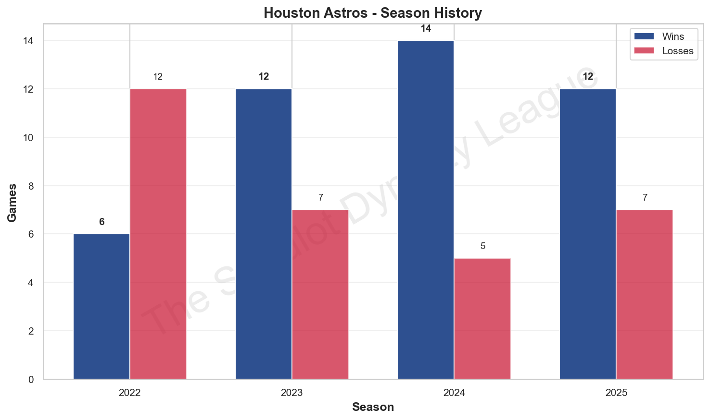
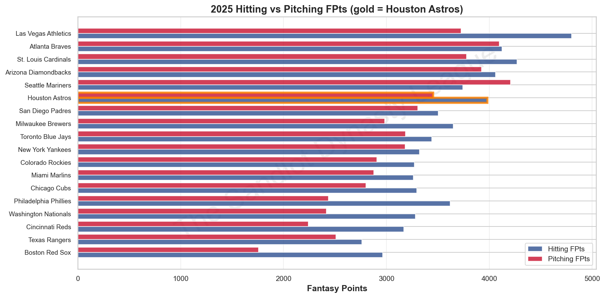
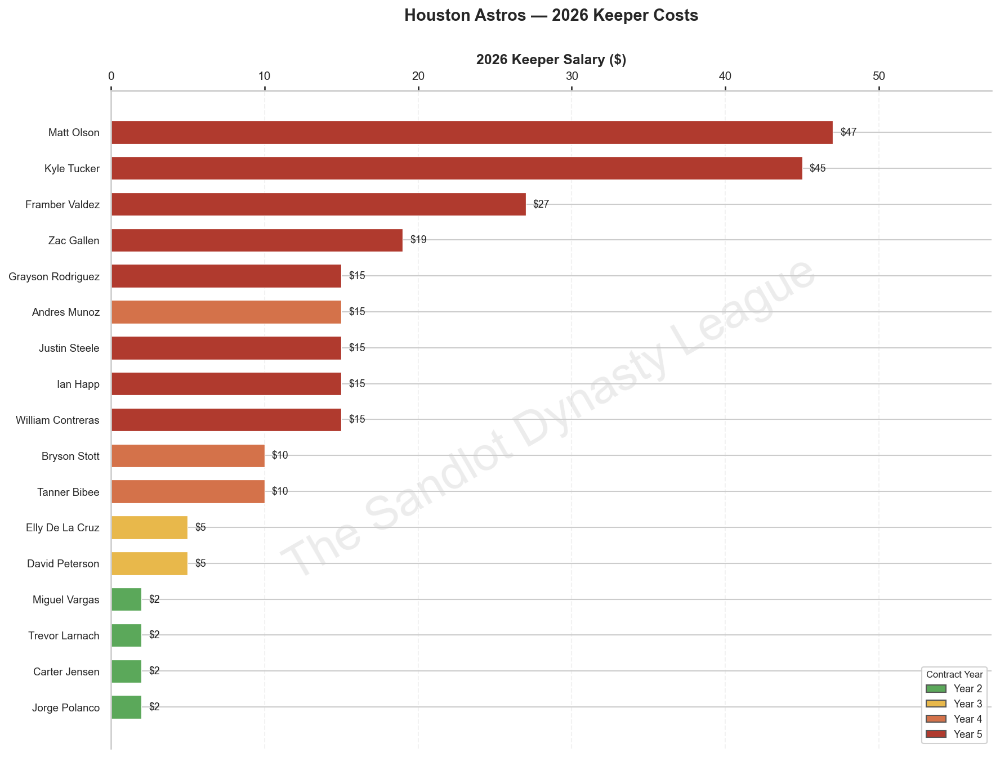
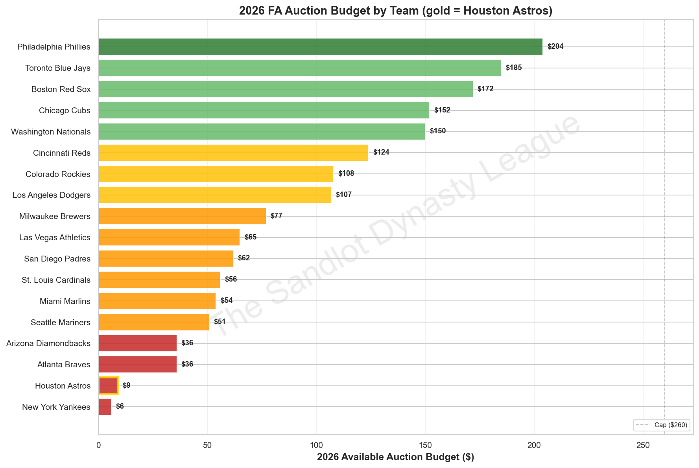

Anthony Leonardi has done something genuinely difficult in dynasty fantasy baseball: he's built a machine. In four seasons, the Houston Astros have gone 44-31, made the playoffs three times, and produced some of the most efficient roster construction in TSDL history. The 2023 runner-up finish remains his crown jewel — a 12-7 regular season that carried him all the way to the championship game. The 2024 team was arguably even better on paper, going 14-5 to post the third-best record in the league, only to exit in the divisional round. And in 2025, despite a modest dip to the sixth seed, Leonardi's club still finished above league average in total fantasy points and punched into the real playoff bracket.
This is a contending franchise. That's not in dispute. What is very much in dispute — and what makes the 2026 Astros one of the most fascinating teams in the league to analyze — is how they get from here to there with one hand tied behind their back.
Specifically: $9. That's the auction budget. Two hundred and fifty-one dollars committed to keepers, nine dollars left for the free agent market, and an absolute chasm between the Astros and every other team with real spending power. The roster is deep and talented. The contracts, increasingly, are not cheap. And the window for this specific group of players to deliver a title is both real and finite. 2026 feels like a year of reckoning.
Before a single pitch was thrown in 2025, Leonardi was already building for the season ahead. The MiLB slow draft — his primary mechanism for long-term roster construction — produced five new picks, supplemented by five retained players from the prior year's farm system. The flagship selection was Cam Caminiti with the 16th overall pick, a name that would resurface with irony later in the summer. Behind him, Leonardi added Ryan Sloan (34th overall), Michael Arroyo (52nd), Anderson Brito (70th), and Josuar Gonzalez (88th). Retained without using a pick were Justin Crawford, Sebastian Walcott, Xavier Isaac, Caden Dana, and Cade Povich. At the time, it looked like a loaded system. By August, it would look very different.
The 2025 FA Auction told you everything you needed to know about where this team stood heading into the season: Leonardi spent a grand total of $9 at auction, picking up Reid Detmers ($4), Ke'Bryan Hayes ($4), and Jose Quintana ($1). When a manager spends $9 at auction, it's not because they missed the memo — it's because they have a roster they believe in and no budget to work with. That's a strategic declaration, not an oversight. The team entering 2025 was deep enough that Leonardi didn't need the auction; he just needed health and performance from what he already had.
The in-season trade activity was where things got genuinely interesting. Leonardi made seven trades in 2025, more than almost anyone in the league, and the results were decidedly mixed.
April kicked off with two quick moves that set the tone. On April 13, he sent prospect Xavier Isaac and Cade Povich to Milwaukee in exchange for Tanner Bibee — a young pitcher then at $5/Year 3. Four days later, he flipped Jake Burger ($5) to Seattle for Seth Lugo. The Bibee deal looks excellent in retrospect: Bibee delivered 375 fantasy points across 31 starts and heads into 2026 as a legitimate mid-rotation cornerstone. The Lugo deal is harder to grade — Lugo doesn't appear on the 2026 keeper list, suggesting he underperformed or was cut for salary reasons.
May saw Leonardi acquire Trevor Larnach and Zac Veen from Chicago for Trent Grisham, a buy-low on a platoon outfielder that worked out reasonably well. Larnach posted 325 FPts in 142 games — solid depth at a price that made sense.
June brought the most consequential stretch of deals. On June 4, he picked up Randy Arozarena from Washington, then immediately flipped Arozarena to New York on June 24 in exchange for Zac Gallen. Trading an outfielder acquired for two cheap arms (Liberatore and Abner Uribe) and getting back a durable, proven starter is a win. Gallen delivered 375 FPts across 33 starts and is now a keeper at $19. A week later, Leonardi sent Randy Vasquez and prized prospect Justin Crawford to Philadelphia for Jorge Polanco and Jack Flaherty. Parting with Crawford — a consensus top-25 prospect at the time — was significant. Polanco delivered 388 FPts in 138 games and now sits at just $2 heading into 2026, making it a shrewd value extraction even if Crawford had long-term upside.
The August blockbuster was the trade that aged most awkwardly. Leonardi sent Cam Caminiti (his first-round MiLB draft pick from that spring), Evan Carter, and Shane Smith to New York for Edwin Diaz and Mason Barnett. Diaz is not on the 2026 keeper list, and Barnett doesn't appear in the current MiLB system either — suggesting neither panned out as hoped. Dealing your top draft pick six months after selecting him is a high-variance swing, and this one appears to have swung and missed.
On net: the 2025 trade activity earned a B-minus. The Bibee and Gallen acquisitions were legitimate wins. The Polanco deal sacrificed real prospect capital for a cheap two-year contributor. The Caminiti trade is a question mark that may take years to fully evaluate.
B− In-Season Strategy Grade
Season AnalysisThe Houston Astros of 2025 were exactly what their preseason profile suggested: good enough to make the playoffs, not quite good enough to win it all. They went 12-7 in the regular season, finishing sixth overall in a competitive 18-team field, and punched their ticket to the championship bracket as the sixth seed. Through the first eight weeks of the season, they looked like a genuine title threat — they raced out to a 7-1 start, cracked the top-two in power rankings, and at their peak were producing over 380 fantasy points per week. Then the schedule hardened, the wins got tougher to find, and a 5-6 second half dropped them from potential top-three seed to the middle of the bracket.
The hitting numbers were strong across the board — the Astros ranked well above league average in both categories, a testament to a lineup that was genuinely deep. Elly De La Cruz led the team with 509.5 FPts across a full 162-game season. Matt Olson (504 FPts) and Kyle Tucker (490 FPts) were almost as productive, and Andres Munoz turned in a 420.5-point season out of the closer slot across 64 appearances. The pitching was balanced and above average. Framber Valdez anchored the rotation with 441.5 FPts in 31 starts; Bibee and Gallen — both mid-season acquisitions — each cleared 375 FPts in roughly 30 starts apiece. The team was built like a veteran contender because it essentially is one.
The postseason told a harder story. As the sixth seed, the Astros drew Seattle in the divisional round — and the Mariners had their number, winning 652-618 in a game that was closer than the margin suggests but still a loss. That single playoff elimination dropped them into the consolation bracket, where they beat San Diego before falling to Atlanta in the second consolation round. A useful draft positioning outcome, but not what anyone came to do.
The best FAAB story of the 2025 season was Miguel Vargas, claimed for a laughably cheap $1 after being dropped by someone earlier in the year. Vargas went on to post 366 FPts across 138 games — a 2.6 FPts/G average that made him one of the better values in the league. He's now a $2 keeper heading into 2026 at his second contract year, eligible at 1B and 3B. That's exactly the kind of opportunistic pickup that separates well-managed teams from the rest. Leonardi found a legitimate starter on the waiver wire for a dollar, and now he's locked him up at a price that won't become burdensome for at least two more seasons.

Six players were released heading into 2026, and while five of them were cheap Year 1 contracts and easy decisions, the sixth one hurts.
Willy Adames | SS | $12 → $17 (Yr4→5) — The most eyebrow-raising cut on the list. Adames produced 445.5 FPts in 160 games last season — fourth on the team — and is comfortably one of the better shortstops in the league. But he was entering Year 5 at $17, and with $251 already committed to keepers and only $9 in auction budget, Leonardi simply couldn't carry him. This is the brutal math of a salary-maxed roster: you have to cut good players because the great players already ate your budget. Adames is a genuine loss. Whoever grabs him in the auction is getting one of the better values available.
Jose Ferrer | $1 (Yr1→2) — Ferrer actually delivered 281 FPts in 2025, solid production from a cheap contract. But at a buck, he was a rental, and the team clearly had other priorities at the position. Clean cut, no real argument against it.
Brett Baty | $1 (Yr1→2) — Baty turned in 271 FPts, respectable production from a cheap Year 1 contract. With Miguel Vargas and Jorge Polanco coming back as multi-positional options at 3B and 2B, the roster fit wasn't there. Moving on makes sense.
Seth Halvorsen | $1 (Yr1→2) — 141 FPts in 2025, replacement-level production from what appears to be a depth arm. Easy release.
Tanner Gordon | $1 (Yr1→2) — 111 FPts, marginal production, Year 1 contract. No compelling reason to escalate. Moved on.
Tyler Wells | SP/RP | $1 (Yr1→2) — 63 FPts, minimal contribution. Wells appeared to be a depth piece who never found a role. Released without ceremony.
The bottom five were all exactly what you'd expect: cheap Year 1 contracts that didn't warrant escalation. The Adames cut is the one that stings — and it's a preview of the kinds of painful decisions this roster will face repeatedly over the next few years as those $47 and $45 salaries keep climbing.

Seventeen keepers. Two hundred and fifty-one dollars. An average keeper salary of roughly $15 per player. This is an expensive roster — the second most expensive in the league, trailing only the Yankees by three dollars — and it shows in both the talent level and the financial constraints that come with it. The salary chart tells the story visually: a cluster of big Year 5 contracts anchoring the top, a thin band of cheap Year 2 pickups at the bottom, and almost nothing in between. This team is built around a core of stars, supplemented by cheap gambles, with very little middle-class infrastructure.
And what a core it is.
The single best contract in the entire Astros system, and arguably one of the best in the league. De La Cruz led the team in fantasy points last season, playing all 162 games at shortstop and delivering consistent, elite production across the stat categories. At $5 — going to $10 next year — he's a bargain that borders on obscene. A full-season performer with upside still on the table given his age and athleticism, De La Cruz is the kind of keeper you build a dynasty around. He is the cornerstone of this team, full stop.
Tucker missed 26 games in 2025 but still delivered one of the best per-game averages on the roster at 3.6 FPts/G. He's an elite outfielder — arguably one of the three or four best hitting contributors in TSDL — and $45 at Year 5 reflects that. But here's where the math gets uncomfortable: Tucker goes to $50 in 2027. At that salary level, the question of whether to keep him becomes very real very fast, and Leonardi has no financial room to absorb a down year from a $50 player. For now, Tucker is a cornerstone. His future is a looming question mark.
Olson played all 162 games and put up 504 FPts — consistent, durable, elite. He's also the second-most expensive keeper on the roster and headed to $52 in 2027. Multiple projection systems have him listed as a candidate to be cut by other teams at similar salaries; his own team now faces that same reckoning at the next escalation. For now, the production justifies the cost. He's a cornerstone — a 500-point first baseman is rare — but the clock is ticking. By 2028, at $57, Olson becomes a genuine financial liability regardless of performance.
Valdez remains one of the most reliable starters in TSDL. His 14.2 FPts per start ranks among the best in the rotation, and 31 starts of durable, quality production is exactly what you need from a number-one pitcher. At $27, he's not cheap, but he earns his salary. Going to $32 next year, Valdez is still producing at a rate that makes the contract defensible through the end of his deal. He is the pitching anchor of this team.
Beyond the headliners, the supporting cast is deep and reasonably priced. Andres Munoz ($15, Yr4) delivered 420.5 FPts out of the closer role across 64 appearances — one of the best relief seasons in the league — and heads to Year 5 at $20 next season. He's elite at his position and represents the most reliable save source on the roster. William Contreras ($15, Yr5) posted 426 FPts in 150 games at catcher, which puts him comfortably among the top catchers in TSDL. At Year 5, he goes to $20 in 2027; the question of whether to carry a $20 catcher into Year 6 will need to be answered eventually, but 2026 is not that year.
Ian Happ ($15, Yr5) delivered 427.5 FPts in 150 games — solid production — but the value proposition gets murkier when you consider his limited dynasty upside at his age. He's a reliable above-average contributor heading into what should be a full-capacity season, but at $20 next year, he joins the growing list of keepers that will require a performance check before escalation. Tanner Bibee ($10, Yr4) is the rotation's most interesting piece: 375 FPts in 31 starts, outstanding per-start rate, and a genuinely strong dynasty profile. At $10, he's the best value arm on the staff and should anchor the rotation for years.
Zac Gallen ($19, Yr5) contributed 375.5 FPts in 33 starts — a solid if unspectacular season from a durable veteran arm. He goes to $24 next year, and while the production is real, the long-term ceiling here is limited. Gallen is a reliable number-three starter, not a dynasty cornerstone. David Peterson ($5, Yr3) quietly put up 342 FPts in 30 starts at 11.4 FPts/G — excellent per-start value for a $5 price tag. He's one of the best bargains on the roster and has legitimate upside as a mid-rotation arm.
Jorge Polanco ($2, Yr2) and Miguel Vargas ($2, Yr2) are the two most efficient cheap keepers on the roster — both delivered north of 360 FPts last season for essentially nothing. Bryson Stott ($10, Yr4) provided 379.5 FPts in 147 games, serviceable but not exciting at second base. Trevor Larnach ($2, Yr2) hit 325 FPts in 142 games as a solid fourth outfielder. Carter Jensen ($2, Yr2) appeared in just 20 games but shows legitimate catching upside as a prospect-adjacent asset. These cheap keepers are the team's safety valve — low-cost floor players who don't threaten the salary structure.
Then there are the two big question marks. Justin Steele ($15, Yr5) pitched in just four games in 2025 before undergoing left elbow surgery. He's expected back around May 15, meaning the Astros will carry $15 in dead salary through the first six weeks of the season. Grayson Rodriguez ($15, Yr5) has no 2025 statistics listed at all — a complete blank season from a pitcher who was once considered a rotation cornerstone. At $15 apiece and both in Year 5, these two eat $30 in keeper salary while contributing almost nothing in the season's first half. That's not a small problem when your total auction budget is $9.
Two $15 Year 5 starters who combined for four starts last season. That's $30 in keeper salary doing essentially nothing. For a team with a $9 auction budget, there is no room for passengers at that price.The Minors
Here is where the 2026 Houston Astros story takes a genuinely surprising turn. The active roster is talented but aging and expensive. The minor league system? It's spectacular, and it's the reason this team has a real long-term future even as the salary structure tightens.
Sebastian Walcott is the crown jewel — and that's not hyperbole. The 19-year-old shortstop is a consensus top-10 prospect, ranked 11th by one major scouting system and 5th by another, with an average consensus landing at 8th overall. He is legitimately one of the five best prospects in professional baseball. A switch-hitter with elite athleticism and an advanced feel for hitting at his age, Walcott projects as a franchise shortstop — and the irony is that the Astros already have Elly De La Cruz locked up at short. When Walcott reaches the majors, either De La Cruz moves or someone gets traded for significant value. Either scenario is an excellent problem to have. He was retained from the prior year's farm without burning a draft pick, and at $0 in a minor league slot, he costs nothing to stash.
The 2025 draft class added three legitimate top-100 prospects. Josuar Gonzalez (age 18) landed as a consensus 52nd-ranked prospect — that's right on the border of two different scouting systems' top-50 lists, making him a contested but clearly high-end arm. Michael Arroyo (age 21) split the difference between a top-50 ranking (one system) and a top-90 ranking (another), landing at a consensus 67th overall. Ryan Sloan (age 20) is similarly highly regarded at consensus 54th, though the two systems diverge somewhat on exactly where he fits in the broader landscape. These are real prospects, not filler — the kind of players who could be contributing at the TSDL level within two or three years. Anderson Brito (age 21) rounds out the new picks at a consensus 285th — more of a longer-term lottery ticket, but appropriate for a late-round pick.
Caden Dana (age 22) is the one retained prospect who didn't make waves in the rankings — consensus 288th — but at 22 years old, he's knocking on the door of major league eligibility and could be a useful TSDL roster piece in the near future if his development accelerates.
Potential 2026 Call-Up Timeline:
Farm Grade: A−
If you're ranking TSDL farm systems right now, Houston belongs in the top tier. Walcott alone would make most systems elite; having three additional consensus top-75 prospects underneath him makes this genuinely impressive. The long-term trajectory of this franchise is much brighter than the 2026 balance sheet might suggest.
Pre-Auction CutsThe March 22 auction deadline looms, and Leonardi faces a genuinely uncomfortable set of decisions on his active roster. Several keepers are either injured, underperforming relative to salary, or simply not worth what they're being paid in the context of a team that has no budget margin to carry passengers.
Grayson Rodriguez | SP | $15 / Year 5 — The most obvious drop candidate on the roster. Rodriguez has zero 2025 statistics — he was a ghost. No production, no explanation in the injury log, just a $15 slot that produced nothing. Heading into Year 5 at $15, he goes to $20 next season if kept. There is no scenario where you carry $15 of dead weight into the auction with a $9 budget. Unless Leonardi has inside information about Rodriguez's health and readiness that suggests a full 2026 season is realistic, this is a release. The dynasty community still believes in Rodriguez's upside, but dynasty value doesn't score fantasy points. Only performance does.
Justin Steele | SP | $15 / Year 5 — Steele is recovering from left elbow surgery and isn't expected back until May 15, 2026. That's six weeks of dead salary in a season where every dollar counts. He made four starts in 2025 before going down. The $15 price tag is steep for a pitcher who won't contribute until mid-May at the earliest, and post-elbow surgery carries real uncertainty about whether the previous version of Steele returns at all. If Leonardi cuts him, Steele becomes a potentially interesting auction target for a team with budget to buy a May returner at a fraction of his keeper cost. If he keeps him, he's betting $15 on an optimistic recovery timeline. Given the auction budget situation, cutting Steele is the defensible call — though it's not without risk if Steele comes back healthy and strong.
Ian Happ | OF | $15 / Year 5 — Happ is a trickier case. He delivered 427.5 FPts in 150 games last season — that's real production. But he's an outfielder with limited positional versatility in a spot where the free agent pool has legitimate alternatives. At $15 heading toward $20 in Year 6, Happ is approaching the salary tier where his production no longer justifies the escalating cost. He's not a dynasty asset at this stage of his career. If the Astros want to create financial space for a longer-term rebuild — or to free up a slot for Walcott's eventual call-up — Happ is the most palatable of the expensive veteran cuts. This is a bubble decision, not a certain cut, but it deserves serious consideration.
The more likely scenario is that Rodriguez gets released, Steele stays (a calculated gamble on the recovery), and Happ remains as a proven contributor. But if Leonardi cuts all three, he'd drop from $251 to $206 in keeper salary and open up $54 in auction budget — transforming his bidding position from spectator to legitimate participant. That's a dramatic strategic pivot worth considering.
Auction StrategyLet's be direct: with $9 in auction budget, the Houston Astros cannot meaningfully compete for any significant free agent. The league's average auction budget this year is somewhere around $100; the Phillies and Blue Jays are walking in with $204 and $185 respectively. The Astros are bringing a pocket knife to a gun fight. Every team with a triple-digit budget can simply outbid them for any player they want.

Only the New York Yankees, at $6, have less spending power — and that's cold comfort when the confirmed free agent pool includes Shohei Ohtani (680.5 FPts, no injury), Juan Soto (661.5 FPts, no injury), and Rafael Devers (522 FPts, no injury). These are players who will go for $50, $80, $100-plus in a competitive auction. The Astros can watch those names go by and hope someone throws them a bone.
What can they actually do?
First: if Leonardi releases Grayson Rodriguez before the auction — and he should — that $15 doesn't help him in the auction since the budget is already set by keeper salaries, not by what he drops. The auction budget is fixed at $260 minus keeper costs. To meaningfully increase his budget, he would need to cut a keeper before the auction date. Releasing Rodriguez, Steele, and Happ would get him to roughly $54 in budget. Still not competitive for premium talent, but at least in the conversation for the middle market.
If the budget stays at $9, the priority is identifying undervalued players who the big spenders overlook. The confirmed free agent pool has some legitimate options in the $5-10 range:
Oneil Cruz (SS/PIT, 353 FPts, no injury listed) — Cruz is an elite dynasty asset whose overall rank makes him one of the most valuable players available in the confirmed FA pool from a long-term perspective. A team with $9 could nominally try to win Cruz in a bidding war, but realistically won't get him. Worth an opening bid just to make others pay.
Ozzie Albies (2B/ATL, 405 FPts, no injury) — a 400-point second baseman is exactly what the Astros need. With Stott and Polanco both at 2B eligible, this is less pressing, but Albies is a legitimate impact bat. He'll go for real money. Unlikely to land in Houston at $9.
Isaac Paredes (1B/2B/3B/HOU, 298 FPts, no injury) — Paredes fills a gaping hole at third base, where the Astros have no legitimate option. At his production level ($298 FPts), he might not attract the same bidding frenzy as a 400-point player. If Leonardi can find him in the $5-8 range, it solves the 3B problem without breaking the bank.
Spencer Schwellenbach (SP/ATL, 307 FPts, elbow surgery — returning June 2026) — dynasty darling, post-surgery risk, but significant upside if healthy. At minimal bid, a dynasty stash worth considering. Flag as injured and treat accordingly — a $2-3 bid for a potential second-half contributor.
The more creative option — and frankly, the one Leonardi should seriously consider — is the buy-and-flip strategy. If he cuts enough keepers to free up $40-50 in budget, he could enter the auction and win a mid-tier player at market rate, then immediately trade them for prospects or a cheap Year 1 asset. This is valid strategy. Several teams will have more budget than quality targets; Leonardi could serve as a mechanism for moving a player from the auction pool into a trade market, extracting value in the process.
Bottom line: at $9, the Astros are largely spectators. The path to improving their 2026 roster runs through the trade market, not the auction. Identify the teams with excess budget and negotiate accordingly.
Draft DayThe Astros hold the 12th pick in the 2026 MiLB slow draft — a respectable mid-round position for a team that made the real playoffs last season. With six of ten farm slots currently occupied, Leonardi has four open spots to work with. That's meaningful room to add, but the question is: add what?
The system already has elite talent at the top (Walcott) and solid depth in the middle (Sloan, Gonzalez, Arroyo). What it lacks is a true MLB-ready prospect who could contribute to the active roster this season. Caden Dana, at 22, is the closest thing, and his consensus ranking outside the top-250 suggests he's more of a developmental piece than an impact call-up.
Given the active roster's vulnerability at third base — which has no keeper option other than Miguel Vargas (1B/3B eligible) — the most logical MiLB target would be a high-floor, close-to-ready corner infielder or a pitcher who could push into TSDL relevance by mid-season. Position scarcity matters: the Astros need a third baseman, and if one falls to the 12th pick, that's the priority.
In terms of prospect type, the system already skews toward upside over floor — Walcott, Gonzalez, and Sloan are all high-ceiling, longer-timeline stashes. Adding a prospect who contributes sooner rather than later would balance the system and provide insurance against the active roster's aging veterans. A 22-24 year old arm with a clear path to a 2026 call-up would serve the team better than another elite-but-distant teenage prospect at this point.
With four picks available and a strong existing foundation, Leonardi has the luxury of being selective. He doesn't need to swing for the fences on every pick. Mixing one aggressive upside selection early with two or three floor-based, timeline-appropriate selections later in the draft is the right approach for a team trying to compete in 2026 while building for 2027 and beyond.
The VerdictThe Houston Astros are a championship-caliber team operating on a grocery store budget. They don't need the auction to compete — they need their two $15 starters to show up healthy, their $45 outfielder to play 150 games, and their dollar shortstop to keep being one of the five best players in the league.
The ceiling here is genuinely high. If Elly De La Cruz continues his ascent, if Tucker and Olson stay healthy for full seasons, and if at least one of Steele or Rodriguez returns to form, this is a 13-6 or 14-5 team that earns a top-four seed and makes a real run at the title. The pitching staff — Framber, Bibee, Gallen, Peterson — is legitimate. The lineup is deep. The closer is elite. When this team is healthy and clicking, it looks like a contender.
The floor is scarier than it looks. Two $15 starters who combined for four starts in 2025 represent real production risk. The $9 auction budget means no corrective mechanism if injuries strike early. No third baseman on the keeper list means a positional hole heading into Opening Day. And the schedule will not be kind to a team that relies on aging, expensive contributors to stay healthy all year.
Projected Record: 11-8 to 13-6
Playoff Projection: 85% probability — this roster is too good to miss the real playoff bracket
Ceiling: 14-5, top-three seed, legitimate championship contender if Tucker and De La Cruz peak simultaneously
Floor: 9-10, bubble playoff team or first-round exit if Steele/Rodriguez both disappoint and Olson hits the decline curve early
Bold Prediction: Leonardi cuts at least one more expensive keeper before the auction, unlocks $25-30 in budget, and spends it on a mid-tier third baseman who becomes the team's unsung MVP. This team finishes fourth in the regular season and loses in the conference round — agonizingly close, but not yet.
The Bottom Line: The Astros are what they are — a veteran-heavy, talent-rich machine that is simultaneously one of the best teams in TSDL and one bad month away from a financial crisis. They'll compete. They'll probably make the playoffs. And as long as Sebastian Walcott keeps developing in the minors, the long game is very much alive.